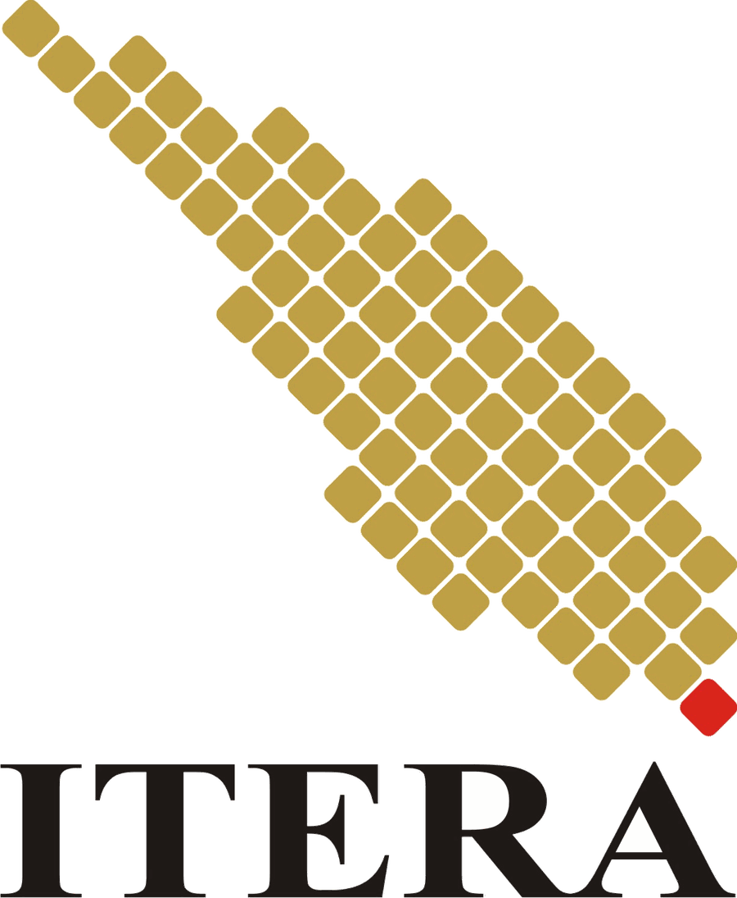
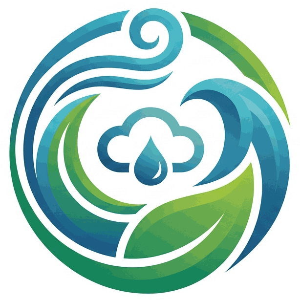

error
cirrus
chevron_right
target


Atmosight
Precise Forecast. · Tim Envirocircle
—
KNOTS
TIM ENVIROCIRCLE
Tim Envirocircle
Atmosight mengubah model cuaca global yang gratis jadi peta yang enak dibaca siapa saja. Angin, hujan, suhu, kelembapan, tekanan, dan tutupan awan sampai tiga hari ke depan, diperbarui otomatis tiap hari. Kami tim kecil di baliknya, dari data mentah sampai tampilan di layarmu.

Memuat data model…